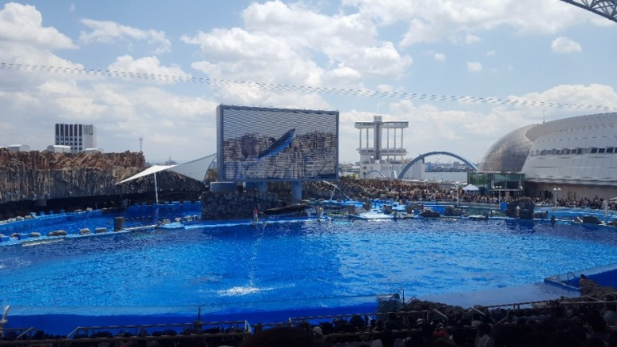
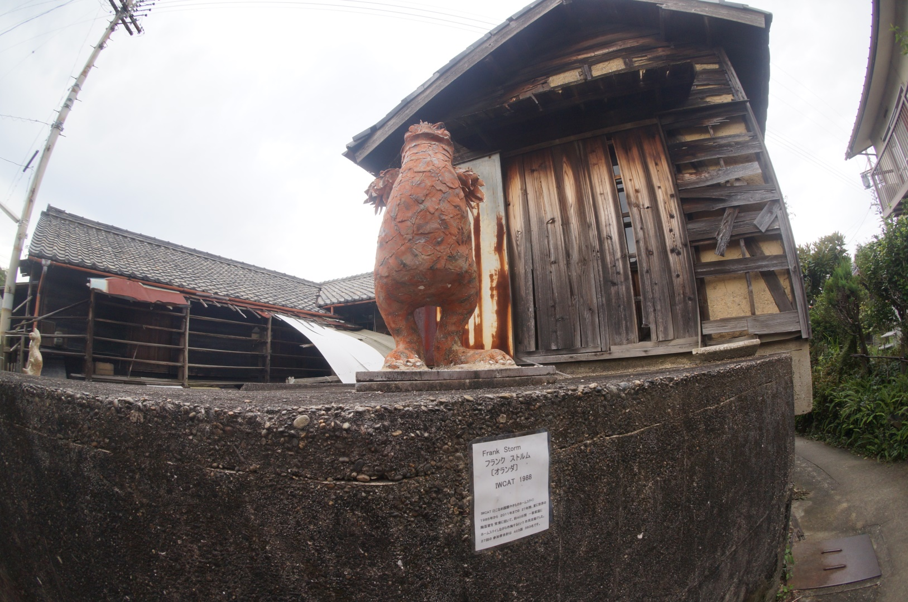

-
 Nagoya Castle(名古屋城) 일본 성 주위에서 자주 보이는 해자 평지에 성을 만들곳이 많은 일본은 성곽보호를 위해 성주위를 해자를 판곳이 많다고 하는데 지금은 물길은 보이질 않습니다.
Nagoya Castle(名古屋城) 일본 성 주위에서 자주 보이는 해자 평지에 성을 만들곳이 많은 일본은 성곽보호를 위해 성주위를 해자를 판곳이 많다고 하는데 지금은 물길은 보이질 않습니다. -
 Nagoya TV Tower(名古屋tvタワー) 에펠탑과 비슷해 보이는 미나미 나고야 TV타워로 나고야 관광지로 꼭가는 곳이며 엘레베이터를 타고 나고야TV타워 아래를 보는 풍경이 일품입니다.
Nagoya TV Tower(名古屋tvタワー) 에펠탑과 비슷해 보이는 미나미 나고야 TV타워로 나고야 관광지로 꼭가는 곳이며 엘레베이터를 타고 나고야TV타워 아래를 보는 풍경이 일품입니다. -

Port of Nagoya Public Aquarium(名古屋港水族館) 컨텐츠 하나만큼은 나고야성 유물들 보다도 많았습니다. 바다생물애는 관심이 없는 편이라 그냥 지나쳣지만 관심이 있으신분은 시간가시는줄 모르고 보실것 같네요.
-

Tokoname Pottery Village(常滑焼の村) 도코나메 도자기 마을은 도자기를 굽던 유명한 마을이라고 합니다. 거리 골목골목에는 옛스러운 일본 전통집이 많은데 일본의 특유의 아기자기함을 느길수 있엇다.